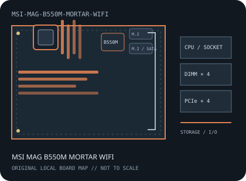

[ INDIVIDUAL COMPONENT // MOTHERBOARDS ]
MSI MAG B550M MORTAR WIFI
AMD Socket AM4 / AMD B550, Micro-ATX, 244 × 244 mm, 2020. This record identifies the exact model and revision scope below.

REVISION WARNING: Verify the full model name and PCB revision silkscreen before fitting a CPU, selecting memory, or applying firmware. Similar names and revisions may use different support files.
Specifications
| Catalog subcategory | AMD Socket platforms |
|---|---|
| Board / revision covered | MS-7C94, MAG B550M MORTAR WIFI; not the non-WiFi MORTAR or MORTAR MAX variant. Match the PCB ID and manual. |
| Socket and chipset | AMD Socket AM4 / AMD B550 |
| Form factor | Micro-ATX, 244 × 244 mm |
| Memory | Four dual-channel DDR4 DIMM sockets, up to 128 GB; data rate and validated modules vary with CPU, BIOS and MSI's QVL. |
| CPU and BIOS support | AM4 Ryzen families on MSI's MS-7C94 CPU support table, including supported Ryzen 3000 and 5000 series and selected APUs. Individual models require the listed minimum BIOS. |
| Expansion | Two PCIe x16-length slots (primary CPU slot up to PCIe 4.0 x16; secondary chipset slot up to PCIe 3.0 x4) and two PCIe 3.0 x1 slots. |
| Storage | Two M.2 sockets with CPU-dependent PCIe generation and SATA/PCIe mode limits, plus six SATA 6 Gb/s ports. Consult the manual for lane sharing. |
| Rear I/O and connectivity | Rear USB 3.2 Gen 2 Type-A and Type-C, USB 3.2 Gen 1 and USB 2.0, HDMI/DisplayPort for supported APUs, 2.5GbE, Wi-Fi 6/ Bluetooth and multi-channel audio. |
Compatibility and revision notes
The integrated wireless module and antenna belong to the WiFi SKU. CPU, PCIe generation and display outputs depend on the processor and BIOS; use the exact MS-7C94 support tables.
Socket, connector shape and chipset branding alone do not establish compatibility. Check the exact board revision, CPU support table, minimum BIOS, memory population rules, power connectors, case clearance and lane-sharing details in the cited documents.
Preservation and repair
Check Wi-Fi antenna connectors, M.2 shield screws, AM4 socket contacts and the micro-ATX standoff pattern; never cross-flash the similarly named non-WiFi board.
For archival preservation, record PCB revision, serial/date codes, installed firmware, known faults, repairs and test conditions. Use ESD-safe handling and do not power a board with loose conductive hardware beneath it.
Manufacturer sources
- MSI MAG B550M MORTAR WIFI specificationsOfficial MSI specification for the WiFi model and its interfaces.
- MSI MAG B550M MORTAR WIFI manuals and downloadsManufacturer manual for board layout, installation and BIOS setup.
- MSI MAG B550M MORTAR WIFI CPU/BIOS supportUse the MS-7C94 CPU table and BIOS release notes.
Manufacturer specifications, manuals and support lists are authoritative for the physical board; use only revision-matched firmware.